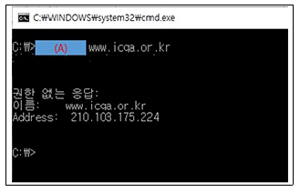
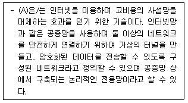
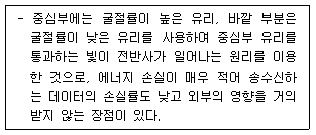
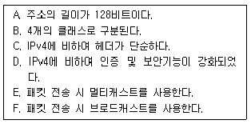
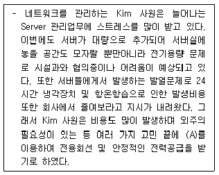
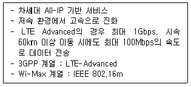
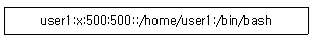
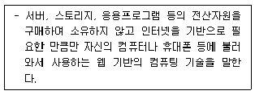

네트워크관리사-2급 (2020-08-23 기출문제)
1과목: TCP/IP
1. 다음 중 Ping 유틸리티와 관련이 없는 것은?
- ICMP 메시지를 이용한다.
- Echo Request 메시지를 보내고 해당 컴퓨터로부터 ICMP Echo Reply 메시지를 기다린다.
- TCP/IP 구성 파라미터를 확인 할 수 있다.
- TCP/IP 연결성을 테스트 할 수 있다.
(정답률: 80%)

2. TCP와 UDP의 차이점을 설명한 것 중 옳지 않은 것은?
- TCP는 전달된 패킷에 대한 수신측의 인증이 필요하지만 UDP는 필요하지 않다.
- TCP는 대용량의 데이터나 중요한 데이터 전송에 이용이 되지만 UDP는 단순한 메시지 전달에 주로 사용된다.
- UDP는 네트워크가 혼잡하거나 라우팅이 복잡할 경우에는 패킷이 유실될 우려가 있다.
- UDP는 데이터 전송전에 반드시 송수신 간의 세션이 먼저 수립되어야 한다.
(정답률: 79%)
3. IP Header의 내용 중 TTL(Time To Live)의 기능을 설명한 것으로 옳지 않은 것은?
- IP 패킷은 네트워크상에서 영원히 존재할 수 있다.
- 일반적으로 라우터의 한 홉(Hop)을 통과할 때마다 TTL 값이 '1' 씩 감소한다.
- Ping과 Tracert 유틸리티는 특정 호스트 컴퓨터에 접근을 시도하거나 그 호스트까지의 경로를 추적할 때 TTL 값을 사용한다.
- IP 패킷이 네트워크상에서 얼마동안 존재 할 수 있는가를 나타낸다.
(정답률: 85%)
4. IPv4 Class 중에서 멀티캐스트 용도로 사용되는 것은?
- B Class
- C Class
- D Class
- E Class
(정답률: 84%)
5. ′255.255.255.224′인 서브넷에 최대 할당 가능한 호스트 수는?
- 2개
- 6개
- 14개
- 30개
(정답률: 72%)
6. IPv6 헤더 형식에서 네트워크 내에서 혼잡 상황이 발생되어 데이터그램을 버려야 하는 경우 참조되는 필드는?
- Version
- Priority
- Next Header
- Hop Limit
(정답률: 72%)
7. IP 패킷은 네트워크 유형에 따라 전송량에 있어 차이가 나기 때문에 적당한 크기로 분할하게 된다. 이때 기준이 되는 것은?
- TOS(Tape Operation System)
- MTU(Maximum Transmission Unit)
- TTL(Time-To-Live)
- Port Number
(정답률: 86%)
8. ARP와 RARP에 대한 설명으로 옳지 않은 것은?
- ARP와 RARP는 전송 계층에서 동작하며, 인터넷 주소와 물리적 하드웨어 주소를 변환하는데 관여한다.
- ARP는 IP 데이터 그램을 정확한 목적지 호스트로 보내기 위해 IP에 의해 보조적으로 사용되는 프로토콜이다.
- RARP는 로컬 디스크가 없는 네트워크상에 연결된 시스템에 사용된다.
- RARP는 MAC 주소를 알고 있는 상태에서 그 MAC 주소에 대한 IP Address를 알아낼 때 사용한다.
(정답률: 60%)
9. IP Address ′127.0.0.1′ 이 의미하는 것은?
- 모든 네트워크를 의미한다.
- 사설 IP Address를 의미한다.
- 특정한 네트워크의 모든 노드를 의미한다.
- 루프 백 테스트용이다.
(정답률: 90%)
10. 사설 IP주소를 공인 IP주소로 바꿔주는데 사용하는 통신망의 주소 변환 기술로, 공인 IP주소를 절약하고, 내부 사설망을 이용하여 인터넷에 연결하므로 보안을 강화할 수 있는 것은?
- DHCP
- ARP
- BOOTP
- NAT
(정답률: 85%)
11. SNMP에 대한 설명으로 옳지 않은 것은?
- 사용자가 네트워크 문제점을 발견하기 전에 시스템 관리 프로그램이 문제점을 발견할 수 있다.
- 데이터 전송은 UDP를 사용한다.
- IP에서의 오류 제어를 위하여 사용되며, 시작지 호스트의 라우팅 실패를 보고한다.
- 네트워크 장비로부터 데이터를 수집하여 네트워크 관리를 지원하고 성능을 향상시킨다.
(정답률: 59%)
12. 서버를 관리하는 Kim 사원은 회사지침으로 기존 홈페이지를 http방식에서 https방식으로 변경하라고 지시가 내려져서 https의 특징에 대하여 알아보고 있는 중이다. 다음 보기 중에서 https의 특징으로 옳은 것은?
- 기존 http보다 암호화된 SSL/TLS를 전달한다.
- tcp/80번 포트를 사용한다.
- udp/443번 포트를 사용한다.
- 인증이 필요하지 않아 사용하기가 간편하다.
(정답률: 80%)
13. 네트워크를 관리하는 Kim 사원은 스위치에 원격접속시 Telnet을 이용하여 작업을 주로 진행하였지만 신규로 도입되는 스위치에는 SSH로 접속 방법을 교체하고자 한다. 다음 중 SSH의 특징을 검토 중 내용이 옳지 않은 것은?
- Telnet에 비하여 보안성이 뛰어나다.
- ssh1은 RSA 암호화를 사용한다.
- ssh2는 RSA 외 더 다양한 키교환방식을 지원한다.
- tcp/23번을 이용한다.
(정답률: 83%)
14. TCP 3-Way Handshaking 연결수립 절차의 1,2,3단계 중 3단계에서 사용되는 TCP 제어 Flag는 무엇인가?
- SYN
- RST
- SYN, ACK
- ACK
(정답률: 74%)
15. UDP 패킷의 헤더에 속하지 않는 것은?
- Source Port
- Destination Port
- Window
- Checksum
(정답률: 81%)
16. 패킷 전송의 최적 경로를 위해 다른 라우터들로부터 정보를 수집하는데, 최대 홉이 15를 넘지 못하는 프로토콜은?
- RIP
- OSPF
- IGP
- EGP
(정답률: 82%)
17. 네트워크 및 서버관리자 Kim 사원은 ′www.icqa.or.kr′이라는 사이트를 도메인에 IP 등록을 하였다. 해당 IP가 제대로 도메인에 등록되었는지 확인하는 (A)에 들어가야 할 명령어는? (단. 윈도우 계열의 명령프롬프트(cmd)에서 실행하였다.)

- ping
- tracert
- nbtatat
- nslookup
(정답률: 75%)
2과목: 네트워크 일반
18. 패킷교환의 특징에 대한 설명 중 옳지 않은 것은?
- 패킷과 함께 오류제어를 함으로서 고품질/고신뢰성 통신이 가능하다.
- 패킷을 전송 시에만 전송로를 사용하므로 설비 이용 효율이 높다.
- 패킷교환의 방식으로는 연결형인 가상회선방식과 비연결형인 데이터그램(Datagram) 두 가지가 있다.
- 복수의 상대방과는 통신이 불가능하다.
(정답률: 83%)
19. 프로토콜의 기본적인 기능 중에서 수신측에서 데이터 전송량이나 전송 속도 등을 조절하는 기능은?
- Flow Control
- Error Control
- Sequence Control
- Connection Control
(정답률: 78%)
20. 다음 (A) 안에 들어가는 용어 중 옳은 것은?

- VLAN
- NAT
- VPN
- Public Network
(정답률: 84%)
21. OSI 7 Layer에서 암호/복호, 인증, 압축 등의 기능이 수행되는 계층은?
- Transport Layer
- Datalink Layer
- Presentation Layer
- Application Layer
(정답률: 83%)
22. LAN의 구성형태 중 중앙의 제어점으로부터 모든 기기가 점 대 점(Point to Point) 방식으로 연결된 구성형태는?
- 링형 구성
- 스타형 구성
- 버스형 구성
- 트리형 구성
(정답률: 90%)
23. 다음에서 설명하는 전송매체는?

- Coaxial Cable
- Twisted Pair
- Thin Cable
- Optical Fiber
(정답률: 90%)
24. 아래 내용에서 IPv6의 일반적인 특징만을 나열한 것은?

- A, B, C, D
- A, C, D, E
- B, C, D, E
- B, D, E, F
(정답률: 89%)
25. 다음 내용 중 (A)에 들어갈 내용은?

- IDC (Internet Data Center)
- IPS (Intrusion Prevention System)
- IDS (Intrusion Detection System)
- IOS (International Organization for Standardization)
(정답률: 71%)
26. 다음은 몇세대 이동 통신인가?

- 5세대 이동 통신
- 2세대 이동 통신
- 3세대 이동 통신
- 4세대 이동 통신
(정답률: 79%)
27. OSI 7 Layer 중 네트워크계층(Network Layer)에 속하는 장치는?
- Router
- Bridge
- Repeater
- LAN Card
(정답률: 80%)
3과목: NOS
28. Linux에서 사용자에 대한 패스워드의 만료기간 및 시간 정보를 변경하는 명령어는?
- chage
- chgrp
- chmod
- usermod
(정답률: 82%)
29. Linux 디렉터리 구성에 대한 설명으로 옳지 않은 것은?
- /tmp - 임시파일이 저장되는 디렉터리
- /boot - 시스템이 부팅 될 때 부팅 가능한 커널 이미지 파일을 담고 있는 디렉터리
- /var - 시스템의 로그 파일과 메일이 저장되는 위치
- /usr - 사용자 계정이 위치하는 파티션 위치
(정답률: 72%)
30. 컴퓨터가 부팅될 수 있도록 Linux 운영체제의 핵이 되는 커널을 주 기억 장소로 상주시키는데 사용되는 부트 로더는?
- GRUB
- MBR
- CMOS
- SWAP
(정답률: 73%)
31. Linux 시스템에서 특정 파일의 권한이 ′-rwxr-x--x′ 이다. 이 파일에 대한 설명 중 옳지 않은 것은?
- 소유자는 읽기 권한, 쓰기 권한, 실행 권한을 갖는다.
- 소유자와 같은 그룹을 제외한 다른 모든 사용자는 실행 권한만을 갖는다.
- 이 파일의 모드는 ′751′ 이다.
- 동일한 그룹에 속한 사용자는 실행 권한만을 갖는다.
(정답률: 72%)
32. Linux에서 프로세스와 관련된 명령어에 대한 설명 중 옳지 않은 것은?
- kill - 프로세스를 종료시키는 명령어
- nice - 프로세스의 우선순위를 변경하는 명령어
- pstree - 프로세스를 트리형태로 보여주는 명령어
- top - 가장 우선순위가 높은 프로세스를 보여주는 명령어
(정답률: 78%)
33. 다음은 Linux 시스템의 계정정보가 담긴 ′/etc/passwd′ 의 내용이다. 다음의 설명 중 옳지 않은 것은?

- 사용자 계정의 ID는 ′user1′ 이다.
- 패스워드는 ′x′ 이다.
- 사용자의 UID와 GID는 500번이다.
- 사용자의 기본 Shell은 ′/bin/bash′ 이다.
(정답률: 87%)
34. Linux에 존재하는 데몬에 대한 설명 중 올바른 것은?
- crond : 호스트 네임을 IP 주소로 변환하는 DNS 데몬
- httpd : 리눅스에 원격 접속된 사용자에 대한 정보를 알려주는 데몬
- kerneld : 필요한 커널 모듈을 동적으로 적재해주는 데몬
- named : inetd 프로토콜을 지원하는 데몬
(정답률: 74%)
35. Linux에서 서버를 종료하기 위해 ′shutdown - h +30′을 입력하였으나 갑자기 어떤 작업을 추가로 하게 되어 앞서 내렸던 명령을 취소하려고 한다. 이때 필요한 명령어는?
- shutdown –c
- shutdown -v
- shutdown –x
- shutdown -z
(정답률: 82%)
36. Linux에서 DNS의 SOA(Start Of Authority) 레코드에 대한 설명으로 옳지 않은 것은?
- Zone 파일은 항상 SOA로 시작한다.
- 해당 Zone에 대한 네임서버를 유지하기 위한 기본적인 자료가 저장된다.
- Refresh는 주 서버와 보조 서버의 동기 주기를 설정한다.
- TTL 값이 길면 DNS의 부하가 늘어난다.
(정답률: 73%)
37. Windows Server 2016의 DNS 서버에서 정방향/역방향 조회 영역(Public/Inverse Domain Zone)에 대한 설명으로 올바른 것은?
- 정방향 조회 영역은 도메인 주소를 IP 주소로 변환하는 영역이다.
- 정방향 조회 영역에서 이름은 ′x.x.x.in-addr.arpa′의 형식으로 구성되는데, ′x.x.x′는 IP 주소 범위이다.
- 역방향 조회 영역은 도메인 주소를 IP 주소로 변환하는 영역이다.
- 역방향 조회 영역은 외부 질의에 대해 어떤 IP주소를 응답할 것인가를 설정한다.
(정답률: 76%)
38. Windows Server 2016에 설치된 DNS에서 지원하는 레코드 형식 중 실제 도메인 이름과 연결되는 가상 도메인 이름의 레코드 형식은?
- CNAME
- MX
- A
- PTR
(정답률: 79%)
39. 다음 중 웹서버인 아파치(Apache) 환경 설정 파일은?
- named.conf
- smb.conf
- lilo.conf
- httpd.conf
(정답률: 83%)
40. 서버 담당자 Park 사원은 Windows Server 2016에서 성능 모니터를 운영하여 서버의 성능을 분석하고자 한다. 다음 중 성능 모니터로 미리 정의한 일정한 주기로 특정 데이터를 수집하고자 성능 모니터 도구를 시작하기 위한 명령어로 올바른 것은?
- perfmon
- msconfig
- dfrg
- secpol
(정답률: 61%)
41. 서버 담당자 Park 사원은 Windows Server 2016에서 시스템을 감시하고자 이벤트뷰어 서비스를 점검하려 한다. Windows Server 2016 이벤트 뷰어에는 시스템을 감시하는 4가지 항목의 Windows 로그가 있다. 다음 중 이벤트 뷰어 Windows 로그에 속하지 않는 항목은?
- 보안
- Setup
- 시스템
- 사용자 권한
(정답률: 67%)
42. 서버 담당자 Park 사원은 데이터를 안전하게 보호하는 일을 담당하였다. 도난 발생 시 데이터를 보호하기 위해 강력한 암호화를 사용해 데이터를 보호하는 Windows 기능을 선택하여 로컬 보안이 없는 지사나 데이터센터의 경우 완벽한 솔루션을 지원할 수 있도록 하고자 한다. 다음 중 이러한 기능을 지원하는 것은?
- BitLocker
- NTLM
- Encryption
- vTPM
(정답률: 74%)
43. 서버 담당자 Park 사원은 Windows Server 2016에서 사용자 및 그룹을 관리하는 업무를 부여받았다. Windows Server 2016에는 기본적으로 3개의 로컬 사용자 계정이 생성되어 있는데, 다음 중 기본적으로 생성되는 계정이 아닌 것은?
- Administrator
- DefaultAccount
- Guest
- root
(정답률: 79%)
44. 서버 담당자 Park 사원은 Hyper-V 부하와 서비스의 중단 없이 Windows Server 2012 R2 클러스터 노드에서 Windows Server 2016으로 운영체제 업그레이드를 진행하려고 한다. 다음 중 작업에 적절한 기능은 무엇인가?
- 롤링 클러스터 업그레이드
- 중첩 가상화
- gpupdate
- NanoServer
(정답률: 78%)
45. 서버 담당자 Park 사원은 Windows Server 2016에서 폴더에 저장할 수 있는 용량을 제한하고, 특정한 파일의 유형은 업로드하지 못하도록 설정하고자 한다. 이러한 설정을 통해서 서버 담당자는 좀 더 유연하고 안전한 파일서버를 구축할 수 있게 된다. 다음 중 서버 담당자가 구축해야 할 적절한 서비스는 무엇인가?
- FSRM(File Server Resource Manager)
- FTP(File Transfer Protocol)
- DFS(Distribute File System)
- Apache Server
(정답률: 70%)
4과목: 네트워크 운용기기
46. 로드밸런싱(Load Balancing)에 대한 설명이 맞는 것은?
- 물리적인 망 구성과는 상관없이 가상적으로 구성된 근거리 통신망 기술
- 사용량과 처리량을 증가시키고 지연율을 낮추며 응답시간을 감소시키고 시스템 부하를 피할 수 있게 하는 최적화 기술
- 가상머신이 실행되고 있는 물리적 컴퓨터로부터 분리된 또 하나의 컴퓨터
- 웹 브라우저와 서버 간의 통신에서 정보를 암호화하는 기술
(정답률: 81%)
47. 다음은 무엇에 대한 설명인가?

- 클라이언트-서버 컴퓨팅
- 클라우드 컴퓨팅
- 웨어러블 컴퓨팅
- 임베디드 컴퓨팅
(정답률: 87%)
48. 게이트웨이(Gateway)의 역할로 올바른 것은?
- 전혀 다른 프로토콜을 채용한 네트워크 간의 인터페이스이다.
- 트위스트 페어 케이블 사용 시 이용되는 네트워크 케이블 집선 장치이다.
- 케이블의 중계점에서 신호를 전기적으로 증폭한다.
- 피지컬 어드레스의 캐시 테이블을 갖는다.
(정답률: 80%)
49. OSI 7계층 중 물리 계층에서만 사용하는 장비로써 근거리통신망(LAN)의 전송매체상에 흐르는 신호를 정형, 증폭, 중계하는 것은 무엇인가?
- Router
- Repeater
- Bridge
- Gateway
(정답률: 84%)
50. 전송 매체에서 10Base-T 표기가 의미하는 바가 올바른 것은?
- 전송속도: 10kbps, 전송방식: 베이스밴드, 전송매체: 꼬임선
- 전송속도: 10Mbps, 전송방식: 브로드스밴드, 전송매체: 광케이블
- 전송속도: 10Mbps, 전송방식: 베이스밴드, 전송매체: 꼬임선
- 전송속도: 10Mbps, 전송방식: 브로드스밴드, 전송매체: 꼬임선
(정답률: 74%)